Как читать авторский курс и нормативные материалы
Это учебные материалы, а не заключение о соответствии конкретного продукта. Организационные модели курса отделяйте от терминов стандарта: ППК в опубликованном проекте — машиночитаемый перечень, а живой реестр его версий является практикой сопровождения. Термин OSA в разных материалах имеет разный охват. Статус и обязательность нормативного документа проверяются отдельно; проект КАПО опубликован как проект первой редакции.
🎓 Карта курса
Живая карта Таблица модулей строится
dataviewиз конспектов. Колонка «Статус» показывает готовность (stub/draft/ready).
Модули
- М00. М00. Ориентация в курсе и карта решений
- М01. М01. Термины, угрозы и границы SCA OSA
- М02. М02. SBOM и ППК как машинный источник фактов
- М03. М03. Форматы SBOM: CycloneDX, SPDX, SWID
- М04. М04. Идентификаторы компонентов и уязвимостей
- М05. М05. Инструменты генерации SBOM
- М06. М06. Поиск уязвимостей и управление VDR/VEX
- М07. М07. Лицензионная чистота и юридический workflow
- М08. М08. Защита цепочки поставки и OSA
- М09. М09. C и C++ legacy без дисциплины пакетного менеджера
- М10. М10. Много исполнителей и корпоративная модель продукта
- М11. М11. Корпоративный кейс: генератор фактов и сервис вердиктов
- М12. М12. CodeScoring и подготовка пилота
- М13. М13. Нормативная трассировка и доказательная база
- М14. М14. Политики, исключения и принятие риска
- М15. М15. Методика преподавания и итоговая аттестация
- М16. М16. SBOM for AI и честный SBOM контейнерных образов
Учебная траектория

Результат обучения
Что умеет выпускник Построить SCA/OSA процесс для продукта с C/C++ legacy и несколькими исполнителями: получить SBOM/ППК, оценить качество координат, провести vulnerability/license triage, оформить VEX как решение производителя продукта, оформить исключения и внедрить CI/CD gate.
Ключевые справки
- VEX в процессе РБПО: откуда берется и как выпускать — обязательная опора для М06, П09 и П35.
- Оглавление справочника
Дальше 🧭 Навигатор курса · 🧪 Практики · 🗂 Канбан · 🖼 Канвас · интерактивная схема · VEX в РБПО